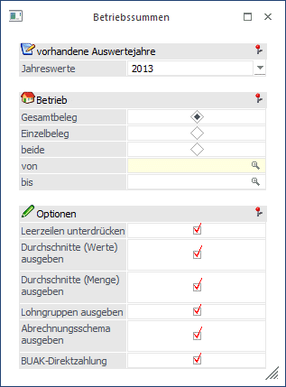
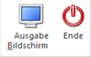

Die Betriebssummen beinhalten alle Jahreslohnkonten aller Arbeitnehmer.
Die Betriebssummen werden im Programmpunkt
1 Auswertungen
1 Betriebssummen
aufgerufen. Dabei können folgende Einschränkungen durchgeführt werden.

Auswertejahr
Aus der Auswahllistbox
Ø Jahreswerte
kann das Abrechnungsjahr ausgewählt werden, für das die Auswertung durchgeführt werden soll. Es werden alle Jahre aufgelistet, für die Abrechnungen vorhanden sind.
Betrieb
Es kann entschieden werden, in welchem Umfang die Auswertung durchgeführt werden soll:
ü Gesamtbeleg:
Mit dieser
Einstellung wird nur der Gesamtbeleg (alle Abrechnungen aller Betriebe des
Mandanten) ausgewertet.
ü Einzelbeleg
Mit dieser
Einstellung kann in den Felder "von" und "bis" eine Einschränkung der Betriebe
durchgeführt werden, die ausgewertet werden sollen. In diesem Fall wird kein
Gesamtbeleg gedruckt.
ü Beide
Mit dieser Option werden
sowohl der Gesamtbeleg als auch die Einzelbelege gedruckt, wobei hier auch die
Einschränkung auf einzelne Betriebe (Selektion von - bis) berücksichtigt
wird.
Ø Leerzeilen unterdrücken
Ist diese Option aktiv, dann werden nur die Zeilen ausgedruckt, wo auch ein Wert vorhanden ist. Bleibt die Option inaktiv, dann werden alle Zeilen ausgedruckt - das macht ggf. das Kontrollieren von Werten einfacher.
Ø Durchschnitte (Werte) ausgeben
Wenn diese Option aktiviert ist, dann werden die Durchschnittswerte ebenfalls mit angedruckt (sofern Durchschnitte vorhanden sind).
Ø Durchschnitte (Mengen) ausgeben
Wenn diese Option aktiviert ist, dann werden die Durchschnittsmengen ebenfalls mit angedruckt (sofern entsprechende Durchschnitte vorhanden sind).
Ø Lohngruppen ausgeben
Wird diese Option aktiviert, dann werden auch alle Lohngruppen ausgegeben, die bei den entsprechenden Abrechnungen der AN verwendet wurden.
Ø Abrechnungsschema ausgeben
Durch Aktivierung dieser Checkbox werden alle Abrechnungsschema, die bei den Abrechnungen verwendet werden, mit angedruckt.
Buttons

Ø Ausgabe
Aus der Auswahllistbox kann gewählt werden, ob die Ausgabe am Bildschirm, am Drucker oder auf Tabelle (Excel) durchgeführt werden soll. Standardmäßig wird die Ausgabe auf Bildschirm vorgeschlagen, die auch durch Drücken der F5-Taste gestartet werden kann.
Die Einstellungen, die für den Ausdruck vorgenommen, werden pro Benutzer gespeichert und beim nächsten Aufruf auch entsprechend vorgeschlagen.
Durch Drücken der F5-Taste wird die Auswertung gestartet, wobei auch gleich die aktuellen Einstellungen gespeichert werden. D.h. beim nächsten Aufruf des Menüpunktes werden die Optionen des letzten Ausdrucks automatisch vorgeschlagen.
Ø Ende
Durch drücken des Ende Buttons oder der ESC Taste wird das Fenster geschlossen
Achtung:
Die Werte für das Betriebssummenblatt wird aus den vorhandenen Abrechnungen ermittelt. Dabei wird die in der Abrechnung hinterlegte Betriebsnummer als Zusammenfassungskriterium verwendet.
Das Betriebssummenblatt enthält die gleichen Informationen, wie das Jahreslohnkonto - beim Betriebssummenblatt werden alle AN des Betriebes (des Mandanten) zusammengerechnet.
Dazu werden folgende Informationen mit ausgewertet:
Ø Anzahl Abrechnungen
Hier wird die Gesamtanzahl der Abrechnungen pro Monat angezeigt.
Ø DG-Abgabe (U-Bahn) Anzahl
Hier wird die Anzahl der AN angezeigt, die mit DG-Abgabe abgerechnet wurden.